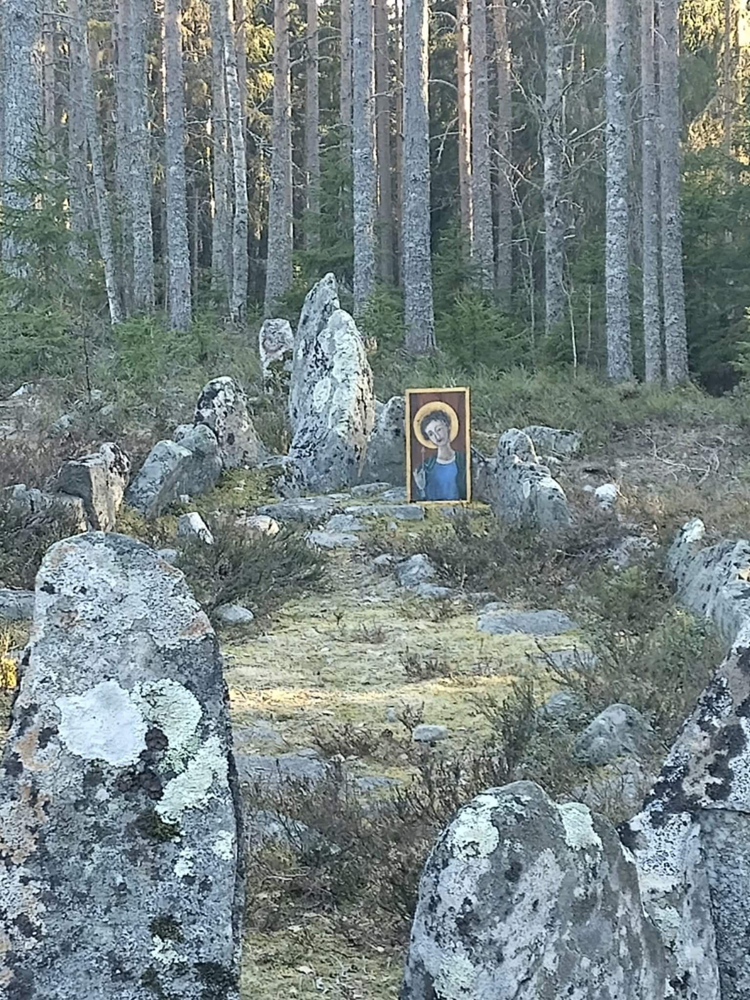

I had a delightful time in Luleå on Tuesday. Arrived early enough to hang out with Eva and Göran and eat dinner with them before we went into town to Danensdag. This was an event sponsored by Norrbottens Museum on the occasion of the international day of dance. In addition to Danskul (the polska dance group of Luleå Hembygdsgille that I have danced with since 2011, up till I moved to Lövånger), we also had the Herrskapsdans group, a couple of different Middle Eastern dance groups, a line dance group, a West Coast Swing dance group, an Indian Dance group, and perhaps at least one more I am not remembering now. One of the Middle Eastern Dancers, Frida, is the archaeologist I worked with last summer on the Archaeological excavation near Kiruna. Since she works for the museum, she was one of the organisers of the evening, and her group did at least five performances spread out over the evening, as did the Herskapdans group. We in Danskul, on the other hand, did all four of our dances as a single set, as we had the musicians with us, and it takes a little longer to get all of us, and all of the musician, and their instruments up on stage than it does to just get dancers in place and let the sound guy press play.
Oh, but it was wonderful to dance with them again. I love all dance, but Swedish Folk Dance is by far my favourite. I love all Swedish Folk music, but the tunes played in Norrbotten by Luleå Hembygdsgille are by far my favourite! The evening was, of course, far more time sitting than dancing. The little theater we were in is nice and intimate, which means that there is no place for people to dance in a corner while others are on the stage. Ours was the 15th performance of the evening, and we were roughly in the middle of the set. They turned off the lights for the show, so I had to put my sewing down and then just kinda half danced in my seat. All of the performances were enjoyable, but they would have been more fun if I could have danced, too.
After the show David and I went grocery shopping, he for the rest of the week, me for things to eat on the bus home, and I picked up a couple bags of Nutritional yeast that the ICA in Luleå has that we haven’t found in Skellefteå yet, and I was out of. Then we sat up talking till nearly midnight, and after I finished my yoga I stayed up reading FB a while before finally going to sleep around 0:30.
I woke up needing to pee at 04:45, and since Keldor’s alarm tends to go off at 05:00, I sent him a good morning message, and stayed awake looking at my phone waiting for him to wake up so we could do our morning phone call as he drove to work. He didn’t see the message, so I tried calling him at 5:30. No answer. I tried again at 5:45. No answer. and again at 06:00, still no answer. He normally starts work at 06:00, so I was a little confused/disturbed that he wasn’t seeing messages or hearing the phone. At 06:10 he finally answered the phone, he had slept in, because he had an 08:00 appointment for a vaccination needed for work, and there wasn’t any point in heading to work, only to turn around and leave for the appointment around the time they would have gotten things set up and ready to work for the day. Gee, it would have been nice if I knew that, I could have slept in, too!
But, since I was awake, I got my things packed up and took the earliest bus home—the bus that goes from Haparanda to Umeå stops at the bus stop only an 8 minute walk from David’s on its way to the Luleå bus station, so I got it there, and was able to hang out with Keldor on the phone for nearly two hours, till he got to his appointment. As it turned out, there was no appointment. He checked in and sat in the waiting room till well after they should have seen him. Then he turned on his work phone, to find a message from them canceling the appointment, and rescheduling it for Friday, which is a holiday, and he isn’t willing to take a chunk of time out of a holiday for a vaccine he needs for work, so he logged in and rescheduled it again to a work day.
Then I opened up my computer and settled in for my last day of work for the Library. I had wrapped up everything else, so I did archive stuff, entering information from a spreadsheet list of letters sent to a former Landshövding (governor) of Västerbotten into the Archive database of letters. I finished up the last of the B’s around the time we finally reached Skellefteå, so I called that good, and sent my contact person in the Archives an email summarizing everything I had accomplished for the Archives during my six months in the job. I sent a copy of that note to my boss, and got a very nice reply from him:
“Stort tack för ditt fina meddelande – och för det imponerande arbete du har gjort under din tid hos oss! Det är tydligt att du lagt ner både noggrannhet och engagemang i arkivuppgifterna, och din sammanställning blir ett mycket värdefullt underlag för fortsatt arbete.
Särskilt roligt att höra att du har haft nytta av tiden med oss och att det varit intressant för dig. 50 timmars arkivarbete och flera hundra poster i registren är verkligen ett rejält bidrag – inte minst arbetet med breven och Hällströms material. Du lämnar ett fint spår efter dig i bibliotekets arkivarbete.
Grattis till din nya tjänst inom arkeologi! Det låter spännande, och jag är övertygad om att du kommer att trivas och bidra även där.
Tack själv för gott samarbete och lycka till med allt som väntar!”
Such praise really made my day. I have enjoyed the job, and I think I will enjoy the job with archaeology, too.
Since I took the earliest bus from Luleå I was home by 11:00, so I decided to bake some cookies to take with us to the Valborg bbg that the shire of Uma was doing that evening. I did a variant of a “golden cups” recipe that I remember from the 1970’s cookbook from my mother’s hometown. The dough is just butter, cream cheese, and flour. Shape into balls, press a hollow in them, and fill with jam. I used the last of the Raspberry Flame jam we had bought a while back, because Keldor loves chili, so I thought why not a jam with both chili and raspberries in it? This makes really amazing cookies! The chili level is high enough that one wants the cookie dough to cool the flame. They were a big hit. The bbq was on the shores of the lake near the farthest north Stone Ship in Sweden https://sv.wikipedia.org/wiki/Skeppss%C3%A4ttningen_vid_Mj%C3%B6sj%C3%B6n , so a really pretty setting for the bbq, and, of course, we walked up to the stone ship and burial mounds, too. St. Egon was in attendance at the BBQ, and announced his intention of sailing the ship to Double Wars in a few weeks.
St Egon in a stone ship (see bottom of post)
We were among the last to leave the bbq, and then did the hour drive back home again, getting home on time to do my yoga at 22:00, after which I went straight to sleep, as it had been a long day!
Thursday I took mostly easy, but I did spend a couple of hours tearing out the door frame and walls of the closet under the stairs in the cellar. The plan is to build shelves under the stairs instead, which will be much more useful for organising things than a weirdly shaped curved-sloped roof closet. That was also the day one of my sisters had her surgery to get rid of the cancer and reconstruct her breasts, so they set up a blog on a “follow my cancer journey” web page, so that those of us she is comfortable sharing such information with can get regular updates on how her recovery is going. The rest of us appreciate the updates, and I am glad that one of my other sisters was able to fly down and be there for her during this.
Friday morning I had a quick meeting with the guy organising Expo 26, a big festival that is happening in Skellefteå next year. They want the SCA to come do a demo to showcase what we do, and I am the one who put their hand up to coordinate that. We will also have our big Medieval Days event for the public next year, some weeks after Expo 26, so it will be a bit of pre-publicity and practice.
I must have done something else on Friday, and I am certain I enjoyed it, but I am not really certain what it was. Extra long weekends are nice that way.
On Saturday I did the measurements of the wall and underside of the stairs, and designed the shelves in CorelDraw. I had planned to do more, but then Keldor saw that they had started the live stream of East Kingdom Crown Tournament, https://www.youtube.com/live/LVtjg—owPU?si=KeI6njIPL3Gw805U which happens to be the first time the SCA has had a Crown that was decided by rapier fighting instead of Rattan. Not only was this an historic event, they had clearly put in a LOT of work before the event to make this a truly special live stream. There were 88 pairs of fighter and consort entered in the list (some of the pairs fought for one another, so fewer than 176 bodies), and during the invocation ceremony, as each couple was presented to their Majesties the camera showed them come forward and speak with their Majesties, but there was also an inset image that showed close up photos of each of their faces, their coats of arm, and the spellings of their names and titles. In addition there were two commentators who narrated the entire ceremony for the live stream, explaining who each couple are, what SCA branch they live in, what offices, if any they hold, and/or what they are known for. While they likely just knew this information for some of these pairs, as our narrators are also part of the rapier community, they had clearly done their research, as they had the same amount of information for every pair entering. I was very impressed with both the level of work, and how well it came together.
Then, after the invocation, as the fighters went to get ready, and the people working lists and marshaling etc. went to their stations to get ready for the tournament, the livestream switched to a slideshow showing a different card for each of the individual fighters and for each of the individual consorts, with a photo, their arms, and saying for whom they are fighting (or whom they are inspiring that day).
We made a big bowl of popcorn and settled into the couch to watch the live stream, and, after the popcorn had been eaten, I took out my sewing, and we happily sat on the couch for hours as the tournament played out before us on the big screen, with active comments and discussion by our hosts. It was delightful. They occasionally had technical difficulties, and or pauses in the tournament, during which the slide show of the fighter and consort cards played.
Because I have never lived in, nor visited the East Kingdom, I didn’t expect to recognise anyone entering the tournament. However, to my delight, I discovered that I do know one! Viscondesa Jimena Montoya, who lived in the Mists at the same time I did, and who was the last Princess of the Mists to whom I swore fealty before moving to Lochac, was entered as consort for Noble Rose Erembourc. I don’t know if they were the only parent-child pair in the lists, but I do think it was cool that they entered!
The commentators for the livestream spent a bit of time early on discussing how delightful it is that the rapier community in the East is so diverse, and that there were quite a few entrants where both the fighter and the consort share a gender, that there are nonbinary entrants, and that there were people who entered despite needing accommodations, such as one fighting from a wheelchair. This discussion prompted Keldor to start watching for people who were wearing badges or colours from one or more of the Pride community, and he happily spotted a number of them during the course of the event. The example he most enjoyed was Master Robert Tytes (called “Bobby” on the list tree that they showed later in the day), who was wearing one knee high rainbow-horizontal-striped sock on one leg, and a yellow and orange vertical-striped sock on the other, and knee length breeches, with one orange leg, and the other yellow, so there was no missing the one rainbow sock.
The other fashion statement that Keldor truly loved is the clothing of Ryoukojin, Sovereign of the East, who was wearing a glorious purple and gold over robe, which, when the camera came close, was revealed to be a print of purple flowers and gold skulls. He wants some of that fabric!
The tournament was run first as a round robin list of 8 fields, which meant that there were 11 fighters on each field (assuming no one had to drop out due to illness), so I assume that everyone got in plenty of fighting. The list of all of the fighters and consorts is on their web page https://www.eastkingdom.org/ek_announcement/april-17-2025-spring-2025-crown-tournament-list/ so I copied it into a spreadsheet, and, when the “Sweet 16” were announced who would progress to the next phase, a double elimination tournament, I went though and highlighted all of their names (they were kind and did a split screen, so we could see the piece of paper from the lists showing who was still in, as well as watching the fights themselves).
Therefore, I can copy that list of the “Sweet 16” pairs here, in the same order as published on, and with the numbers from, the above-linked web page, which is sorted in order of precedence of the highest ranked person in each pair: 6. Master Donovan Shinnock fighting for Countess Chatricam Meghanta (Meggie) 7. Jarl Ozurr the Bootgiver fighting for Lady Hemma Eilika Schweinfurt von Nurnberg 8. Kurnfurst Matthias Grunwald fighting for Dona Magdalena von Kirschberg 9. Master Ogedei Becinjab fighting for Master Nataliia Anastasiia Evgenova 10. Doctor William Deth fighting for Sir Aonghas Mac Labhruinn du Brus 11. Maestro Orlando di Sforza fighting for Pendefiges Charis Accipiter 12. Master Llewellyn Walsh fighting for Baroness Mægwynn filia Brun 13. Maister Brendan Firebow fighting for Lady Sisuile Butler 14. Don Gregori Rogue Montana fighting for Mistress Syrine Al-Sakina Bint Houriya 15. Master Robert Tytes fighting for Master Yin Jinyu 16. Don Magnus Morte fighting for Mistress Amée le Mort 17. Don Rodrigo Medina de la Mar fighting for Baroness Bianca Anguissola 18. Lord Bo of Malagentia fighting for Hatun Saruca bint Lazari 19. Drottin Grimolfr Skulason fighting for Lady Hrefna Spakona 20. Trian Ó Bruadair fighting for Thane Ulfrik Viglundrson 21. Captain Albion Drake fighting for Lady Mage Cunningghame alias Blue The best four from that part of the tournament then had a semi-final round: 22. Master Donovan Shinnock fighting for Countess Chatricam Meghanta (Meggie) 23. Jarl Ozurr the Bootgiver fighting for Lady Hemma Eilika Schweinfurt von Nurnberg 24. Maister Brendan Firebow fighting for Lady Sisuile Butler 25. Master Robert Tytes fighting for Master Yin Jinyu Which then determined that the finals would be between Master Donovan Shinnock fighting for Countess Chatricam Meghanta (Meggie), and Master Robert Tytes fighting for Master Yin Jinyu. The commenters pointed out that these four individuals have between them a total of eight peerages. Then they listed all of their various awards, and further commented that “Meggie” holds 4 of those eight peerages herself.
The finals involved quite a few different fights, with weapons form changing between each, before Master Donovan Shinnock earned victory for Countess Chatricam Meghanta (Meggie). By that time it was closing in on midnight, so I put down my sewing, did my yoga, and went to bed, having very much enjoyed my first visit to the East Kingdom. I never caught the names of our hosts (who probably introduced themselves before we started watching), but I very much appreciated their hospitality, and their frequent explanations about local customs, the history of the rapier community in the East, and who the various people participating are. If you haven’t watched it yet, it is worth a look. Either let it play in the background while you work on a project, or skip through to catch a highlight here or there.
This morning I got up early for my fortnightly zoom hangout with my sisters (which I have missed the last couple, due to conflicts with SCA events), and this afternoon I whitewashed the walls under the stairs in the cellar, and started filling in some of the places where the old outer layer had crumbled away.
Now I should post this, do my yoga and get to sleep. Tomorrow is the first day of my new job, and it would be wise to have plenty of energy.
